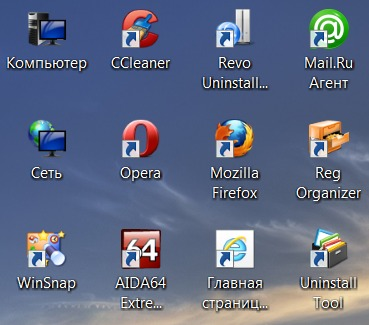
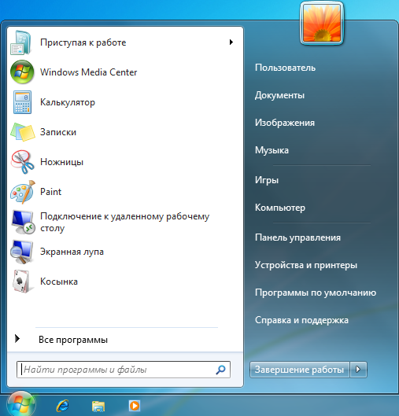

Элементы графического пользовательского интерфейса
Пользовательский интерфейс
— совокупность средств и способов взаимодействия человека и компьютера.Современные ОС имеют графический пользовательский интерфейс. Основными элементами графического интерфейса являются окна и меню.
После загрузки ОС Windows на экране компьютера появляется Рабочий стол с ярлыками и значками.

Рабочий стол
— основное окно графического интерфейса ОС, занимающее все пространство экрана.Внизу Рабочего стола находится Панель задач . На ней расположена кнопка Пуск , кнопки выполняемых программ и открытых окон документов, индикатор языка и времени (даты и времени), индикатор сетевых подключений, регулятор громкости звука. Кнопка Пуск вызывает Главное меню . С помощью Главного меню пользователь может получить доступ ко всем программам, установленным на компьютере.

В процессе работы на Рабочем столе могут раскрываться диалоговые окна, окна папок, окна программ и окна справочной системы.
Диалоговые окна предназначены для организации диалога пользователя с компьютером
Окно программы появляется после запуска программы.
В окне справочной системы можно получить справку о работе программы. Открываются такие окна после нажатия клавиши F1 в процессе работы с программой.Доступ ко всем командам, возможным для данного объекта, можно получить с помощью контекстного меню . Контекстное меню вызывается щелчком правой клавиши мыши.